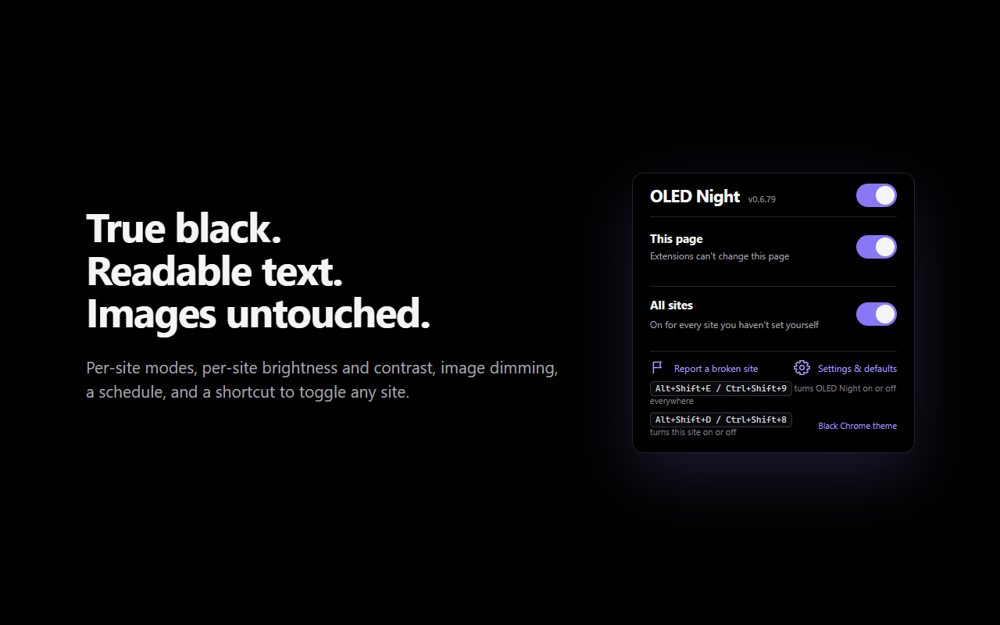

I just wanted everything actually black.
I've got an OLED monitor, and I wanted every site to be black. Not dark grey. Actually black, so the pixels are off.
Every dark mode extension I tried either left everything grey, or made sites dark and broke them: text I couldn't read, random white boxes, weird white gradients around chat boxes, charts turning into blank white shapes, Amazon photos turning into black squares. Some of them even made Gmail and ChatGPT lag.
So I made my own. Every time a site broke, I fixed it and added a test so it stays fixed. It's free and open source. Use it, change it, or tell me what's still broken.
- Text you can't read: dark grey on black, or light grey on white
- White gradients and glows around chats and headers
- Charts and dashboards with blank white fills
- A white flash every time a page loads
- Pages lagging while you scroll or type
- Product photos turning into black squares
- OLED Night fixes each of these, and a test suite that runs the real extension keeps them fixed
Black where it should be. Everything else intact.
Most dark modes run one filter over the whole page. OLED Night recolors each element on its own terms, so it can make careful choices.
True #000 black
Page backgrounds become real black, not dark grey, so OLED pixels actually turn off. Cards and panels keep a subtle lift so layouts stay readable.
Images untouched
Photos, video and artwork keep their true colors. Optionally dim them on bright sites.
Readable text and logos
Main, secondary and muted text stay distinct. Dark logo lettering can be lifted without a white glow, while bright brand accents stay protected.
Respects dark sites
On sites that are already dark, it only pushes their greys to true black and leaves the design alone.
Modern web apps
Charts, web components, embedded chat widgets and frames, and the newest CSS color formats are all handled.
Fast, and no white flash
Pages go black before they draw. Updates are batched, so busy apps like Gmail and ChatGPT stay smooth.
Per-site control
A mode for each site, plus that site's own brightness, contrast and image dimming.
Schedule & shortcuts
Press Alt+Shift+E to turn OLED Night on or off everywhere, or Alt+Shift+D for the current site. Keep your saved settings and optional night schedule.
Private by design
The extension has no analytics, ads or background tracking. Settings sync through your browser profile; optional report details and screenshots are private to the maintainer.
Not a filter. A recolor, element by element.
Most dark modes paint pages dark grey (around #121212) or run one inverting filter over the whole page. OLED Night paints page backgrounds true black, #000000, and chooses each element's color separately.
Per-element recoloring
Backgrounds, text, borders, icons, chart fills, gradients and shadows each get their own dark color, so layouts keep their structure and text keeps its emphasis.
Images preserved
Photos, video, artwork and brand colors are left alone instead of being double-inverted. Image dimming is optional.
Dark sites respected
On a site that is already dark, OLED Night only deepens its greys to true black. Pages go black before they first draw, so there is no white flash.
Performance, measured
The repo's own benchmark in headless Chrome 156 on Windows 11, plain Chrome versus OLED Night 0.6.79, three runs each, medians. Full method and history.
| Test page | Plain Chrome | With OLED Night |
|---|---|---|
| Simple light page: page load | 26 ms | 33 ms |
| Simple light page: page work over 3 s | 20 ms | 19 ms |
| 2,500-row inbox-style page, 20 rows changing every frame: page work over 3 s | 494 ms | 603 ms (about 22% more) |
| Same page: frames in 3 s / worst frame gap | 181 / 18 ms | 179 / 18 ms |
On ordinary pages the cost is within run-to-run noise. On very large, constantly changing pages it does real extra work, and the first recolor of a very large page can delay its load event (about 0.75 s for 2,500 rows in two of three runs). It is not always lighter than other dark modes: an earlier test on the same page measured more CPU than Dark Reader. Reported slowdowns get measured and fixed; 0.6.13 cut typing lag on Discord from 48 to 72 ms per key press to 0.4 ms.
Tested and working on
Every reported breakage gets a regression fixture that runs the real extension in headless Chrome before each release. Fixtures are modeled on Gmail, Google Docs, Sheets and Analytics, YouTube and YouTube Music, ChatGPT, Amazon, CVS, booking and checkout forms, Apple account pages, the California DMV, Instagram and Reddit (including Reddit Enhancement Suite), plus web components, frames, consent banners, charts and canvas apps. These are local reproductions, not live logins.
| Known issue | What to do |
|---|---|
| A canvas app (spreadsheet grid, drawing tool) stays light | Set that site's mode to Invert |
| Google Docs canvas artwork shows dark display colors | Use Deepen blacks only or Off while checking original colors (documents and exports are unchanged) |
| A site you want exactly as designed | Set that site to Off (Alt+Shift+D) |
Browser pages (chrome://, the Chrome Web Store, Firefox add-on pages) | Browsers block extensions there; the companion Chrome theme darkens Chrome's own window |
| Captcha and verification widgets | Intentionally left unchanged so verification keeps working |
Permissions, plainly
Website access (all sites): needed to read each page's colors and recolor it on your device.
Storage: saves your settings and per-site choices in browser storage, which can sync through your browser profile.
activeTab and scripting: let the popup and shortcuts identify the current site and check whether a tab can be reached.
Clipboard (optional): asked only when you paste a screenshot into a report.
No analytics, no ads, no background telemetry, no account and no browsing-history log.
Recommended settings for OLED monitors
Mode: Automatic. Light sites are recolored; already-dark sites only get deeper blacks.
Text brightness: 80 to 90% (default 88). Fully white text on true black can look harsh in a dark room.
Image dimming: off, unless you browse image-heavy sites late at night.
Burn-in care: let your monitor's pixel refresh run and auto-hide the taskbar. Unlit black pixels do not age.
Browser window: add the OLED Night Chrome theme so tabs and toolbar are black too.
Up and running in a minute.
Works in Chrome, Firefox desktop 142 or newer, and Chromium-based browsers including Edge, Brave, Arc, Opera and Vivaldi. Browser settings pages and some protected pages restrict extensions.
Install the extension
Install OLED Night from the Chrome Web Store or Mozilla Add-ons for Firefox for automatic updates. Store approval can lag behind GitHub releases.
Prefer a manual install? Download the latest release below.
- Download oled-night.zip and unzip it into a folder you'll keep, such as
Documents/OLED Night. - Open
chrome://extensions(oredge://extensions). - Turn on Developer mode.
- Click Load unpacked and pick the unzipped folder, the one that contains
manifest.json. - Pin OLED Night from the puzzle-piece menu, then reload any open tabs.
Black browser too optional
The extension darkens websites, but no extension can touch Chrome's own window. The companion OLED Night theme makes the tab bar, toolbar, address bar and new-tab page black to match. Install the theme from the Chrome Web Store, or download the theme ZIP and install it the same way, with Load unpacked.
Getting updates: Chrome Web Store installs update automatically. For manual installs, close Chrome, rename the old install folder as a backup, then unzip the update into an empty folder at the original path. Reopen Chrome and reload OLED Night in chrome://extensions. On GitHub, use Watch → Custom → Releases for release emails.
From source: run npm run package and load dist/chrome. Packaging rebuilds clean install folders.
An _metadata error? For a manual install, use the clean-folder update steps above. For a store install, try switching OLED Night off and on, then clear the old error. If it returns, report your Chrome version and install method privately. Don't delete files in Chrome's profile.
Everything is one click away.
Click the toolbar icon on any site.
- Main switchTurns OLED Night on or off everywhere. The dot in the corner shows whether the current tab is actually darkened.
- This siteChoose a mode just for this site (see the table below).
- AppearanceOLED Black (pure black), Soft Dark (near-black), or Auto (follows your system's dark mode).
- Brightness & ContrastBrightness sets how light text is. Contrast sets how far panels stand out from the black page. The top sliders change only the current site. All sites contains the defaults; site choices take priority.
- Dim images on this siteTakes glare off bright photos and illustrations.
- Report a broken siteAdd optional notes and choose Screenshot this page, or paste, drop or select an image. Review it with Use screenshot, then choose Submit report. Nothing is uploaded before submission. Notes and any image are private to the maintainer for up to 30 days. If you pick an optional problem type, the public tracking issue shows the site domain, that type, the extension version and color mode; otherwise it has a generic title. No GitHub account is required.

Site modes
| Mode | What it does | Use it for |
|---|---|---|
| Use global | Follows the main switch. | Most sites |
| On (automatic) | Recolors light sites. On dark sites, only deepens their blacks. | Sites you always want dark |
| Full recolor | Always recolors, even if the site already looks dark. | Sites with a half-dark design |
| Deepen blacks only | Leaves everything alone except pushing the darkest greys to true black. | Sites with a good dark mode of their own |
| Invert | Flips the whole page, then flips images back. | Compatible canvas apps, including spreadsheets. Figma keeps its native colors. |
| Off | Never touches the site. | Sites you want in their original look |
Design colors stay exact: Figma bypasses recoloring, inversion, image dimming and tuning, even with an explicit site rule. Native color pickers are also protected. ChatGPT uses its native palette with OLED base surfaces to keep streaming conversations responsive.
Shortcut alternatives: Ctrl+Shift+9 pauses or resumes OLED Night everywhere; Ctrl+Shift+8 toggles the current site (Command replaces Ctrl on macOS). The popup and Settings show the keys your browser assigned. Change them in your browser's extension shortcut settings if another extension uses them.
More in Settings & defaults in the popup: every site you've customized, a schedule, a default for image dimming, backup and restore of your settings, and an experimental option for apps built with locked web components.
Questions
A site still looks wrong. What should I try?
Open the popup on that site and try Deepen blacks only if the site already has its own dark design, Invert if it draws its content on a canvas (spreadsheets, design tools), or Off. If it's still broken, click Report a broken site to review scrubbed diagnostics and submit details privately to the maintainer. The public tracking issue has a generic title unless you pick a problem type; then it shows the site domain, that type, the extension version and color mode.
How is this different from Dark Reader?
Dark Reader is great and does a lot. OLED Night is narrower on purpose: it aims for pure black backgrounds while keeping text readable and images, charts and product photos intact, and it's tested against the specific ways dark modes break sites. That includes unreadable text, white fades and glows, blank chart fills, black product photos, web components and chat widgets. If Dark Reader already looks perfect on your sites, keep it. If you want deeper blacks, or it breaks something you use, try this.
How is this different from Chrome's built-in "Auto Dark Mode"?
Chrome's flag runs one filter over the whole page. It produces grey instead of black, can't be tuned per site, and often mangles images and charts. OLED Night decides each element's color separately: backgrounds, text, borders, icons, gradients and shadows each get their own treatment, and images are left alone.
Why don't images get darker?
That's on purpose: photos and artwork should look the way they were made. If a bright image is too much on a black page, turn on Dim images on this site, or set it as the default in Settings.
Will it slow my browser down?
On ordinary pages the difference is within measurement noise. On very large pages that change constantly it does real extra work: in our 2,500-row benchmark it added about 22% page work with no dropped frames. Each update reads colors in one pass and writes in a second, and bursts of page activity are grouped together. Moving the sliders only changes two values, so the page is never re-scanned. See the numbers.
Why does Chrome warn me about "developer mode" extensions?
Chrome shows that notice for any extension you install yourself from a folder instead of from Google's store. It's normal, and you can dismiss it. The code is all public here, so you can see exactly what it does.
Does it work on YouTube, Gmail and other big sites?
Yes. YouTube has its own dark theme, so OLED Night only deepens it to true black without touching its layout. Gmail gets a small tweak so unread emails stand out. Chrome's own pages (chrome:// pages and the Web Store) can't be changed by any extension.
Can I use it on my phone?
Chrome on Android and iOS doesn't support extensions. On Android, some Chromium browsers that do support extensions, such as Kiwi or Lemur, may work, but they aren't tested.
Your browsing stays yours.
The OLED Night extension does not record or save your browsing history. It recolors sites locally, with no analytics, ads or background tracking. This project website has no analytics scripts. The separate Archline Labs company website uses consent-based website analytics. Your settings, including per-site preferences, stay in browser storage and can sync through your browser profile. Firefox's optional browsing-activity permission only lets you share the current site's domain in a bug report after previewing it. Reports also include scrubbed technical diagnostics. Our Cloudflare-hosted service stores these details, notes and any explicitly attached screenshot privately for up to 30 days, with retrieval restricted to the maintainer's verified GitHub identity. GitHub receives a tracking issue. If you pick an optional problem type, it shows the site domain, that type, the extension version and color mode. Your notes, other diagnostics and images are never published. Abuse and deduplication records expire within 49 hours. Anything you manually post in public GitHub issues or comments is public. Nothing is captured automatically or submitted before confirmation. Read the privacy policy.
Built in the open. Help make it better.
The code is licensed under GPL-3.0, so it stays open: anyone who shares or sells a modified copy has to publish its full source too. There's no build step. An automated suite loads the real extension into a headless browser and checks dozens of real-world cases on every change, from charts and chat widgets to frames and slow-loading pages.
- Found a broken site? Open OLED Night on that page, choose Report a broken site, review your diagnostics and any optional screenshot, then choose Submit report. Notes and screenshots are private to the maintainer for up to 30 days. The public tracking issue has a generic title unless you pick a problem type; then it shows the site domain, that type, the extension version and color mode. Anything you manually add to GitHub issues or comments is public.
- Fixing a site? Add a small page that reproduces it to the test suite.
- Star the repo if OLED Night saves your eyes, and watch releases to hear about updates.